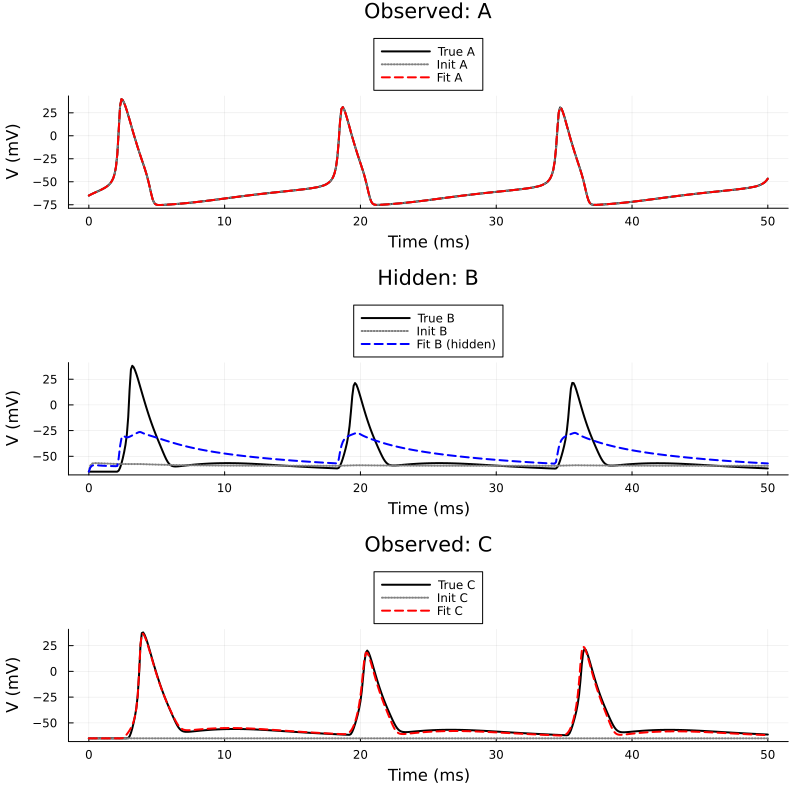

13. Parameter Estimation: Hidden Neuron Chain
Introduction
In this example, we infer the parameters of a completely hidden neuron in a chain. We have a 3-neuron chain (A -> B -> C). Neuron A is driven by an 8.0 nA current. We observe the voltages of A and C, but B is hidden. We must recover the conductances (gNa, gK, gleak) of B and the synaptic weights between A->B and B->C.
To make the optimization problem difficult, we provide initial guesses that prevent the hidden neuron B from spiking. We intentionally do not constrain the parameters to demonstrate a critical concept in system identification: unidentifiability. Without physiological constraints, the optimizer can find "non-physical" parameter combinations (e.g., negative conductances) that still successfully drive the observed output (neuron C).
If I run this on my computer, it trains perfectly: we get the exact voltage trace of $C$, while B converges on crazy parameters that nevertheless match the observed data. When building with literate.jl for some reason the optimisation seems to not run and the fitted parameters are the same as initial
using MTKNeuralToolkit
using SymbolicIndexingInterface: getu
using MTKNeuralToolkit.HodgkinHuxley: SodiumChannel, PotassiumChannel, LeakChannel
using ModelingToolkit: mtkcompile, @named
using OrdinaryDiffEq
using Optimization
using OptimizationOptimJL
using SciMLStructures: Tunable, canonicalize, replace
using SymbolicIndexingInterface: parameter_values, setp
using PreallocationTools
using DataInterpolations
using SciMLBase
using Plots
using Markdown1. Build the True System & Generate Data
top = Scalar()
function build_hh_neuron(name::Symbol; gNa=120.0, gK=36.0, gleak=0.3, pem=false, itps=nothing, K=1.0)
@named cap = Capacitor(topology=top, C=1.0)
@named na = SodiumChannel(topology=top, g=gNa)
@named k = PotassiumChannel(topology=top, g=gK)
@named leak = LeakChannel(topology=top, g=gleak)
channels = [na, k, leak]
if pem
@named pem_ch = PEMObservationChannel(itps=itps, K_init=K, topology=top)
push!(channels, pem_ch)
end
return build_compartment(cap, channels; name=name, V_init=-65.0, topology=top)
end
true_gNa = 120.0
true_gK = 36.0
true_gleak = 0.3
true_g_syn = 3.0
A_true = build_hh_neuron(:A_true; gNa=true_gNa, gK=true_gK, gleak=true_gleak)
B_true = build_hh_neuron(:B_true; gNa=true_gNa, gK=true_gK, gleak=true_gleak)
C_true = build_hh_neuron(:C_true; gNa=true_gNa, gK=true_gK, gleak=true_gleak)
@named syn_AB = ExpSynapse(g_max=true_g_syn, τ=5.0, E_rev=0.0, V_th=-20.0, slope=2.0)
@named syn_BC = ExpSynapse(g_max=true_g_syn, τ=5.0, E_rev=0.0, V_th=-20.0, slope=2.0)
synapse_specs = [
SynapseSpec(A_true.interfaces.V, B_true.interfaces.V, B_true.interfaces.I_syn, syn_AB),
SynapseSpec(B_true.interfaces.V, C_true.interfaces.V, C_true.interfaces.I_syn, syn_BC)
]
drivers = [(1, 8.0)]
true_net = build_acausal_network([A_true, B_true, C_true]; synapse_specs=synapse_specs, drivers=drivers, name=:true_net)
true_sys = mtkcompile(true_net.sys)
true_prob = ODEProblem(true_sys, [], (0.0, 50.0), jac=true, sparse=true)
timesteps = 0.0:0.1:50.0
true_sol = solve(true_prob, Rosenbrock23(); saveat=timesteps)
V_data_A = true_sol[true_sys.A_true.cap.v]
V_data_C = true_sol[true_sys.C_true.cap.v]
itp_A = LinearInterpolation(V_data_A, timesteps)
itp_C = LinearInterpolation(V_data_C, timesteps);2. Setup the PEM Optimization Problem
A and C get PEM observers. B is completely hidden. We intentionally guess terrible parameters for B (including high gleak) and the synapses so the initial model fails to propagate the signal.
guess_gNa = 10.0
guess_gK = 100.0
guess_gleak = 10.0
guess_g_syn = 0.1
K_obs = 0.5
A_fit = build_hh_neuron(:A_fit; gNa=true_gNa, gK=true_gK, gleak=true_gleak, pem=true, itps=[itp_A], K=K_obs)
B_fit = build_hh_neuron(:B_fit; gNa=guess_gNa, gK=guess_gK, gleak=guess_gleak, pem=false)
C_fit = build_hh_neuron(:C_fit; gNa=true_gNa, gK=true_gK, gleak=true_gleak, pem=true, itps=[itp_C], K=K_obs)
@named syn_AB_fit = ExpSynapse(g_max=guess_g_syn, τ=5.0, E_rev=0.0, V_th=-20.0, slope=2.0)
@named syn_BC_fit = ExpSynapse(g_max=guess_g_syn, τ=5.0, E_rev=0.0, V_th=-20.0, slope=2.0)
synapse_specs_fit = [
SynapseSpec(A_fit.interfaces.V, B_fit.interfaces.V, B_fit.interfaces.I_syn, syn_AB_fit),
SynapseSpec(B_fit.interfaces.V, C_fit.interfaces.V, C_fit.interfaces.I_syn, syn_BC_fit)
]
fit_net = build_acausal_network([A_fit, B_fit, C_fit]; synapse_specs=synapse_specs_fit, drivers=drivers, name=:fit_net)
fit_sys = mtkcompile(fit_net.sys)
fit_prob = ODEProblem(fit_sys, [], (0.0, 50.0), jac=true, sparse=true)
params_to_fit = [
fit_sys.B_fit.na.g, fit_sys.B_fit.k.g, fit_sys.B_fit.leak.g,
fit_sys.syn_AB_fit.g_max, fit_sys.syn_BC_fit.g_max
]
setter = setp(fit_prob, params_to_fit)
diffcache = DiffCache(copy(canonicalize(Tunable(), parameter_values(fit_prob))[1]))
v_getter_A = getu(fit_prob, fit_sys.A_fit.cap.v)
v_getter_C = getu(fit_prob, fit_sys.C_fit.cap.v)SymbolicIndexingInterface.GetStateIndex{Int64}(6)3. Define Loss Function & Optimize
function loss(x, p)
prob, timesteps, V_data_A, V_data_C, setter, diffcache, v_getter_A, v_getter_C = p
ps = parameter_values(prob)
buffer = get_tmp(diffcache, x)
copyto!(buffer, canonicalize(Tunable(), ps)[1])
ps = replace(Tunable(), ps, buffer)
setter(ps, x)
newprob = remake(prob; p=ps)
sol = solve(newprob, Rosenbrock23(); saveat=timesteps)
if !SciMLBase.successful_retcode(sol.retcode)
return Inf
end
V_fit_A = v_getter_A(sol)
V_fit_C = v_getter_C(sol)
v_error = sum(abs2, V_fit_A .- V_data_A) + sum(abs2, V_fit_C .- V_data_C)
return v_error / (length(V_data_A) + length(V_data_C))
end
opt_params = (fit_prob, timesteps, V_data_A, V_data_C, setter, diffcache, v_getter_A, v_getter_C)
adtype = AutoForwardDiff()
optfn = OptimizationFunction(loss, adtype)
optprob = OptimizationProblem(optfn, [guess_gNa, guess_gK, guess_gleak, guess_g_syn, guess_g_syn], opt_params)OptimizationProblem. In-place: true
u0: 5-element Vector{Float64}:
10.0
100.0
10.0
0.1
0.14. Optimize and Plot
println("Starting optimization...")
res = solve(optprob, BFGS(); maxiters=1000)
opt_gNa, opt_gK, opt_gleak, opt_g_syn_AB, opt_g_syn_BC = res.u5-element Vector{Float64}:
-94.79207945049114
120.76619339556487
6.696231284565577
35.37617567084051
179.39436421376064Grab the PEM K parameters so we can disable them
K_syms = [fit_sys.A_fit.pem_ch.K, fit_sys.C_fit.pem_ch.K]
K_setter = setp(fit_prob, K_syms)SymbolicIndexingInterface.ParameterHookWrapper{SymbolicIndexingInterface.MultipleSetters{Vector{SymbolicIndexingInterface.SetParameterIndex{ModelingToolkitBase.ParameterIndex{SciMLStructures.Tunable, Int64}}}}, Vector{Symbolics.Num}}(SymbolicIndexingInterface.MultipleSetters{Vector{SymbolicIndexingInterface.SetParameterIndex{ModelingToolkitBase.ParameterIndex{SciMLStructures.Tunable, Int64}}}}(SymbolicIndexingInterface.SetParameterIndex{ModelingToolkitBase.ParameterIndex{SciMLStructures.Tunable, Int64}}[SymbolicIndexingInterface.SetParameterIndex{ModelingToolkitBase.ParameterIndex{SciMLStructures.Tunable, Int64}}(ModelingToolkitBase.ParameterIndex{SciMLStructures.Tunable, Int64}(SciMLStructures.Tunable(), 8, false)), SymbolicIndexingInterface.SetParameterIndex{ModelingToolkitBase.ParameterIndex{SciMLStructures.Tunable, Int64}}(ModelingToolkitBase.ParameterIndex{SciMLStructures.Tunable, Int64}(SciMLStructures.Tunable(), 23, false))]), Symbolics.Num[A_fit₊pem_ch₊K, C_fit₊pem_ch₊K])–- Pure simulation for INITIAL GUESS (No PEM) –-
init_ps = parameter_values(fit_prob)
init_buffer = copy(canonicalize(Tunable(), init_ps)[1])
init_ps = replace(Tunable(), init_ps, init_buffer)
setter(init_ps, [guess_gNa, guess_gK, guess_gleak, guess_g_syn, guess_g_syn])
K_setter(init_ps, [0.0, 0.0]) # Disable PEM controllers
init_prob_free = remake(fit_prob; p=init_ps)
init_sol = solve(init_prob_free, Rosenbrock23(); saveat=timesteps);–- Pure simulation for RECOVERED PARAMETERS (No PEM) –-
fit_ps = parameter_values(fit_prob)
fit_buffer = copy(canonicalize(Tunable(), fit_ps)[1])
fit_ps = replace(Tunable(), fit_ps, fit_buffer)
setter(fit_ps, res.u)
K_setter(fit_ps, [0.0, 0.0]) # Disable PEM controllers
fit_prob_free = remake(fit_prob; p=fit_ps)
fit_eval_sol = solve(fit_prob_free, Rosenbrock23(); saveat=timesteps);–- Plotting the Free-Running Dynamics –-
p1 = plot(timesteps, V_data_A, label="True A", lw=2, color=:black)
plot!(p1, timesteps, init_sol[fit_sys.A_fit.cap.v], label="Init A", ls=:dot, lw=2, color=:gray)
plot!(p1, timesteps, fit_eval_sol[fit_sys.A_fit.cap.v], label="Fit A", ls=:dash, lw=2, color=:red)
title!("Observed: A")
p2 = plot(timesteps, true_sol[true_sys.B_true.cap.v], label="True B", lw=2, color=:black)
plot!(p2, timesteps, init_sol[fit_sys.B_fit.cap.v], label="Init B", ls=:dot, lw=2, color=:gray)
plot!(p2, timesteps, fit_eval_sol[fit_sys.B_fit.cap.v], label="Fit B (hidden)", ls=:dash, lw=2, color=:blue)
title!("Hidden: B")
p3 = plot(timesteps, V_data_C, label="True C", lw=2, color=:black)
plot!(p3, timesteps, init_sol[fit_sys.C_fit.cap.v], label="Init C", ls=:dot, lw=2, color=:gray)
plot!(p3, timesteps, fit_eval_sol[fit_sys.C_fit.cap.v], label="Fit C", ls=:dash, lw=2, color=:red)
title!("Observed: C")
p = plot(p1, p2, p3, layout=(3,1), size=(800, 800), legend=:outertop)
xlabel!(p, "Time (ms)")
ylabel!(p, "V (mV)")
p
5. Parameter Comparison & Unidentifiability
The free-running voltage of neuron C matches the true data quite well. However, if we look at the parameters of the hidden neuron B, we see that the optimizer found a non-physical solution. gNa became negative, and gK was severely reduced.
This is a classic example of unidentifiability. Because B is hidden, the optimizer only tries to match the input current going into C. By altering B's intrinsic dynamics to a non-physical state and scaling up the synaptic weights, the optimizer found an alternative "local minimum" that minimizes the voltage error at C.
Moral of the story: inferring the parameters, or even the behaviour, of a neuron whose voltage you can't see is a thankless task! Exercise for reader: play around with box constraints (easy to implement as charted here) to see if restricting to plausible values helps!
Markdown.parse("""
| Parameter | True Value | Initial Guess | Recovered Value |
|-----------|------------|---------------|-----------------|
| B: gNa | $true_gNa | $guess_gNa | $(round(opt_gNa, digits=3)) |
| B: gK | $true_gK | $guess_gK | $(round(opt_gK, digits=3)) |
| B: gleak | $true_gleak| $guess_gleak | $(round(opt_gleak, digits=3)) |
| Syn A->B | $true_g_syn| $guess_g_syn | $(round(opt_g_syn_AB, digits=3)) |
| Syn B->C | $true_g_syn| $guess_g_syn | $(round(opt_g_syn_BC, digits=3)) |
**Final Loss:** $(round(res.objective, digits=3))
Notice that despite the non-physical hidden parameters, the final loss is relatively low, indicating a good fit for the *observed* variables (A and C) at the cost of the hidden state (B).
""")| Parameter | True Value | Initial Guess | Recovered Value |
|---|---|---|---|
| B: gNa | 120.0 | 10.0 | -94.792 |
| B: gK | 36.0 | 100.0 | 120.766 |
| B: gleak | 0.3 | 10.0 | 6.696 |
| Syn A->B | 3.0 | 0.1 | 35.376 |
| Syn B->C | 3.0 | 0.1 | 179.394 |
Final Loss: 1.404
Notice that despite the non-physical hidden parameters, the final loss is relatively low, indicating a good fit for the observed variables (A and C) at the cost of the hidden state (B).
This page was generated using Literate.jl.